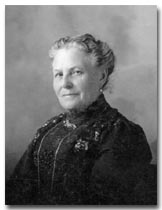
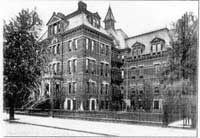

|
 Click the image to enlarge. |
||
Angelina Annetta WeaverAngelina Annetta Weaver was born in New York City on February 11, 1833. She was the wife of Joseph Henderson and mother of six children. |
||
| Important Facts | ||
| February 11, 1833 | Angelina was born in New York City to the parents Joseph Weaver and Mary Ann Diackery of New York City. Source: Angelina's 1909 Death certificate No. 10534. |

(1800-1890) |
| Her father was listed as being born in Italy and her mother was listed as Pennsylvania. Source: 1880 United States Federal Census, New York. | ||
| February 11, 1849 | On Sunday evening, Rev. Edward Lathrop married Joseph Henderson and Angelina Annetta Weaver at the Baptist Tabernacle Church on Mulberry Street, in New York City. Source: Marriage announcement in the New York Herald, Feb 13, 1849, page 4. | |
| May 12, 1850 | Sarah R. Henderson was born in New York City. Source: 1850 United States Federal Census. | |
| October 15, 1850 | The 1850 U.S. Census lists Joseph (23 - Pilot), Angelina A. (18), and Sarah (5 Mo.) living in New York. Source: 1950 United States Federal Census, New York Ward 4, New York, NY. Roll, 536 Book 1, Page 278b. | |
| 1852 | Maurice D. Henderson was born in Brooklyn, New York. Source: The 1860 US Census. | |
| 1854 | Joseph Henderson Jr. was born. | |
| 1860 | Mary Ann Mamie Henderson was born. | |
| July 12, 1860 | The 1860 US Census lists J. Henderson (32), Ann (29), Sarah (10), Maurice (8), and Joseph (6) as living in the 9th Ward Brooklyn city, county of Kings. Source: 1860 US Census for 9th Ward Brooklyn City, County of Kings. | |
| January 23, 1863 | Angelina A. Henderson was born. Source: The Green-Wood Cemetery. | |
| Mrs. Henderson was manager of the Industrial School No. 5 on Throop Avenue in Brooklyn, New York. | ||
| She was a member of the Episcopal Church of St. Matthew in Brooklyn, New York. | ||
| February 28, 1865 | Alexander Dawson Henderson Sr. was born in Brooklyn, New York. Source: Mary's Family Connections, 1979, pg. 86. | |
| July 26, 1870 | The 1870 US Federal Census lists Joseph (46), Angelina (38), Sarah R. (20), Maurice D. (18), Joseph Jr. (16), Mary Ann (10), Angelina A. (8), and Alexander D. (6). Source: 1870 United States Federal Census, Brooklyn Ward 21, Kings County, New York, Series: M593, Roll: 961, Part: 1, Page: 349A. | |
| Easter 1877 | Angelina was present at a St. Matthew Church service as were Alexander Henderson, Mrs. A. Henderson, Angie Henderson, and Maurice Henderson. Source: Church Records from the Church of St. Luke and St. Matthew. | |
| June 12, 1879 | Mrs. Joseph Henderson was on the committee for the strawberry festival at the St. Matthew's Church on Throop Avenue. Source: The Brooklyn Daily Eagle. | |
| 1880 | The 1880 U.S. Census lists the entire Henderson family: Joseph (52) and Angelina (48) living at home with their three daughters, Sarah R. (30), Mary A. (20), Angelina A. (18), and three sons, Maurice (28), Joseph (26), and Alexander (15). Joseph Sr. was still listed as "Pilot". Maurice was listed as sailmaker, Joseph Jr. as broker, and Alexander was at school. The 1880 Census noted that her father was born in Italy and her mother in Pennsylvania. Source: 1880 United States Federal Census for 983 Myrtle Ave., Kings (Brooklyn), New York City-Greater, New York. | |
| October 7, 1890 | Her husband, Joseph Henderson, died at their home at 633 Willoughby Avenue, Brooklyn, New York. Source: Brooklyn Municipal Archives (Death Certificate No. 15592). | Angelina's Signature (1890) |
| October 27, 1890 | Angelina gave several notices in the Daily Eagle newspaper against any persons having claims against the late Joseph Henderson, in pursuance of an order of the Hon. George B. Abbott, Surrogate of the County of Kings. They had until May 1, 1891 to make such claims. Source: The Brooklyn Daily Eagle, pg. 3. Notices appeared from October 1890 through February 1891. | |
| Feb 16, 1892 | Angelina A. Henderson (58), Moris D. Henderson (38) Clerk, Angelina Wilcox (30), Stanley W. Wilcox (9), Charles S. Hendrickson (32-Merchant), Mary A. Hendrickson (30), and Angelina Hendrickson (5) were listed as living in Ward 21, Brooklyn, New York. Source: New York State Census, Brooklyn, Ward 21, E.D. 27, Kings, New York. | |
| 1897 | She was listed as "HENDERSON Anna A. wid. Jos. h 633 Wil'by av." Her son Morris D. was listed at the same address. Source: 1897 LAIN'S BROOKLYN DIRECTORY. | |
| December 15, 1897 | An article appeared in the Brooklyn Daily Eagle, which said: "Verdict For $30,300 - Mrs. Angelina A. Henderson Wins Her Suit against Mrs. Maria H. M. Bartlett in connection with loans made to Mr. Bartlett of the Union Warehouse. Source: Brooklyn Eagle Newspaper, pg 4. | |
| June 8, 1900 | The U.S. Census lists Angelina (68), daughter, Angelina A. (38), son, Morris J. (46), and nephew, Stanley W. (17). Source: 1900 US. Census, Kings, Brooklyn, NY. | |
| June 10, 1903 | Her youngest daughter, Angelina A. Wilcox died early of tuberculosis. Source: ProQuest Historical Newspapers The New York Times, pg. 14. | |
| June 1, 1905 | The 1905 New York State Census lists Sarah R Wells (55), Angelinia A. Henderson (72), and John H. Wells (58). John Wells is listed as a Wholesale Grocery Salesman. They are listed as living at 149 Van Buren Street, Brooklyn, New York. Source: New York State Census, 1905, database with images, FamilySearch. | |
| November 12, 1908 | Angelina signed her last will and testament with Alexander D. Henderson Sr. as the executor of her estate. In her will she gave equal parts of her estate to her four surviving children (Maurice D. Henderson, Sarah R. Wells, Alexander D. Henderson, and Mary A. Hendrickson), $2,000 to her three grand children (Joseph Henderson, Robert B. Henderson, and Stanley L. Wilcox), $500.00 to the Greenwood Cemetery, and $200.00 to the St. Matthew Church. Source: Angelina's Last Will and Testament, Brooklyn, New York. | |
| June 1, 1909 | Angelina died (age 76) at 429 Willoughby Ave., Brooklyn, New York in the residence of her daughter Mary Ann Hendrickson. The cause of death was "chronic endocarditis - senility," which was heart related. She was not well for several years. Source: New York Death certificate No. 10534. | |
| June 3, 1909 | The notice of her death appeared in the Brooklyn Daily Eagle newspaper. Her obituary read: "Angelina A. Henderson wife of the late Captain Joseph Henderson. Funeral services will be held Friday, June 4, 1909 at 2:30 P.M., at the Church of St. Matthew, McDonough st. and Tompkins av." Source: The Brooklyn NY Daily Eagle 1909. | |
| June 3, 1909 | Her obituary was also posted in the New York Times. It read: "Angelina A. Henderson, widow of Capt. Joseph Henderson, an old-time Sandy Hook pilot, died at her home, 639 Willoughby Avenue, Brooklyn, on Tuesday. She was 77 years old. For several years she was the manager of Industrial School 5, in Throop Avenue, Brooklyn. Two sons and two daughters survive her." Source: ProQuest Historical Newspapers The New York Times pg. 9. |  Angelina A. Henderson Green-Wood Cemetery |
| June 4, 1909 | Funeral services took place at St. Matthew's Church, McDonough Street and Tompkins Avenue in Brooklyn, NY. The rev. Dr. Fredric W. Norris officiated. Source: "Mary's Family Connections," 1979, pg. 89. | |
| June 4, 1909 | She was buried in the family plot is at the Green-Wood Cemetery at 500 25th St., Brooklyn, New York - Lot 13244, Section 88. She shares a tombstone with her husband Joseph Henderson and her daughter Angelina A. Wilcox. Source: The Green-Wood Cemetery. | |
| June 10, 1909 | The contents of her Will was listed in the Brooklyn Eagle newspaper. Source: Brooklyn NY Daily Eagle 1909. | |
| July 1, 1909 | A legal notice appeared in the Brooklyn Eagle newspaper asking all persons having claims against Angelina A. Henderson, late of the Borough of Brooklyn deceased are required respond by December 31, 1909. Source: The Brooklyn Daily Eagle, 1909. | |
| March 25, 1919 | The St. Matthew Church bulletin describes the 60th Anniversary of the church. "The rector stated that so far as he was able to discover, two persons only, whose wills have been probated, have devised and bequeathed legacies to the church. They are Angelina A. Henderson and Margarita S. Demarest. Funds in varying amounts have been contributed to the church by the living in memory of the departed, and they are not forgotten. Mrs. A. D. Henderson was listed." Source: Church Notes from the records of the Church of St. Luke and St. Matthew. |  Industrial School 5 |
| 1931-1932 | In the St. Matthew Church 1931-1932 church bulletin, a Memorial section listed that her daughter, Sarah R. Wells, gave a table in memory of Mrs. Angelina A. Henderson. Source: Church bulletin from the Church of St. Luke and St. Matthew. |